Finite-difference score-matching of a one-dimensional Gaussian mixture model
Introduction
Aim
The aim, this time, is to fit a neural network via finite-difference score matching, following the pioneering work of Aapo Hyvärinen (2005) about score-matching, combined with the work of Pang, Xu, Li, Song, Ermon, and Zhu (2020), which uses finite differences to efficiently approximate the gradient in the loss function proposed by Aapo Hyvärinen (2005), and the idea of 1. Song and Ermon (2019) of modeling directly the score function instead of the pdf or an energy potential of the pdf.
Background
Generative score-matching diffusion methods use Langevin dynamics to draw samples from a modeled score function. It rests on the idea of Aapo Hyvärinen (2005) that one can directly fit the score function, from the sample data, using a suitable loss function (associated with the Fisher divergence) not depending on the unknown score function of the random variable. This is obtained by a simple integration by parts on the expected square distance between the model score function and the actual score function. The integration by parts separates the dependence on the actual score function from the parameters of the model, so the fitting process (minimization over the parameters of the model) does not depend on the unknown score function.
The obtained loss function, however, depends on the gradient of the model, which is computationally expensive. Pang, Xu, Li, Song, Ermon, and Zhu (2020) proposed to use finite differences to approximate the derivative of the model to significantly reduce the computational cost of training the model.
The differentiation for the optimization is with respect to the parameters, while the differentiation of the modeled score function is on the variate, but still this is a great computational challenge and not all AD are fit for that. For this reason, we resort to centered finite differences to approximate the derivative of the modeled score function.
For a python version of a similar pedagogical example, see Eric J. Ma (2021). There, they use AD on top of AD, via the google/jax library, which apparently handles this double-AD not so badly.
Take away
We'll see that, in this simple example at least, we don't need a large or deep neural network. It is much more important to have enough sample points to capture the transition region in the mixture of Gaussians.
The finite-difference implicit score matching method
The score-matching method from Aapo Hyvärinen (2005) rests on the following ideas:
1. Fit the model by minimizing the expected square distance between the model score function $\psi(x; {\boldsymbol{\theta}})$ and the score function $\psi_X(x)$ of the random variable $X$, via the explicit score matching (ESM) objective
\[ J_{\mathrm{ESM}}({\boldsymbol{\theta}}) = \frac{1}{2}\int_{\mathbb{R}^d} p_{\mathbf{X}}(\mathbf{x}) \left\|\boldsymbol{\psi}(\mathbf{x}; {\boldsymbol{\theta}}) - \boldsymbol{\psi}_{\mathbf{X}}(\mathbf{x})\right\|^2\;\mathrm{d}\mathbf{x}.\]
2. Use integration by parts in the expectation to write that
\[ J_{\mathrm{ESM}}({\boldsymbol{\theta}}) = J_{\mathrm{ISM}}({\boldsymbol{\theta}}) + C,\]
where $C$ is constant with respect to the parameters, so we only need to minimize the implicit score matching (ISM) objective ${\tilde J}_{\mathrm{ISM}}$, given by
\[ J_{\mathrm{ISM}}({\boldsymbol{\theta}}) = \int_{\mathbb{R}} p_{\mathbf{X}}(\mathbf{x}) \left( \frac{1}{2}\left\|\boldsymbol{\psi}(\mathbf{x}; {\boldsymbol{\theta}})\right\|^2 + \boldsymbol{\nabla}_{\mathbf{x}} \cdot \boldsymbol{\psi}(\mathbf{x}; {\boldsymbol{\theta}}) \right)\;\mathrm{d}\mathbf{x},\]
which does not involve the unknown score function of ${\mathbf{X}}$. It does, however, involve the gradient of the modeled score function, which is expensive to compute.
3. In practice, the implicit score-matching loss function, which depends on the unknown $p_\mathbf{X}(\mathbf{x})$, is estimated via the empirical distribution, obtained from the sample data $(\mathbf{x}_n)_n$. Thus, we minimize the empirical implicit score matching objective
\[ {\tilde J}_{\mathrm{ISM}{\tilde p}_0} = \frac{1}{N}\sum_{n=1}^N \left( \frac{1}{2}\|\boldsymbol{\psi}(\mathbf{x}_n; {\boldsymbol{\theta}})\|^2 + \boldsymbol{\nabla}_{\mathbf{x}} \cdot \boldsymbol{\psi}(\mathbf{x}_n; {\boldsymbol{\theta}}) \right).\]
where the empirical distribution is given by ${\tilde p}_0 = (1/N)\sum_{n=1}^N \delta_{\mathbf{x}_n}.$
On top of that, we add one more step.
4. As mentioned before, computing a derivative to form the loss function becomes expensive when combined with the usual optimization methods to fit a neural network, as they require the gradient of the loss function itself, i.e. the optimization process involves the gradient of the gradient of something. Because of that, one alternative is to approximate the derivative of the model score function by centered finite differences, i.e.
\[ \frac{\partial}{\partial x} \psi(x_n; {\boldsymbol{\theta}}) \approx \frac{\psi(x_n + \delta; {\boldsymbol{\theta}}) - \psi(x_n - \delta; {\boldsymbol{\theta}})}{2\delta},\]
for a suitably small $\delta > 0$.
In this case, since we need compute $\psi(x_n + \delta; {\boldsymbol{\theta}})$ and $\psi(x_n - \delta; {\boldsymbol{\theta}})$, we avoid computing also $\psi(x_n; {\boldsymbol{\theta}})$ and approximate it with the average
\[ \psi(x_n; {\boldsymbol{\theta}}) \approx \frac{\psi(x_n + \delta; {\boldsymbol{\theta}}) + \psi(x_n - \delta; {\boldsymbol{\theta}})}{2}.\]
Hence, we approximate the implicit score matching ${\tilde J}_{\mathrm{ISM}{\tilde p}_0}$ by the finite-difference (implicit) score matching
\[ {\tilde J}_{\mathrm{FDSM}}({\boldsymbol{\theta}}) = \int_{\mathbb{R}} p_X(x) \Bigg( \frac{1}{2}\left(\frac{\psi(x + \delta; {\boldsymbol{\theta}}) + \psi(x - \delta; {\boldsymbol{\theta}})}{2}\right)^2 + \frac{\psi(x + \delta; {\boldsymbol{\theta}}) - \psi(x - \delta; {\boldsymbol{\theta}})}{2\delta} \Bigg)\;\mathrm{d}x,\]
And the empirical implicit score matching ${\tilde J}_{\mathrm{ISM}{\tilde p}_0}$ is approximated by
\[ {\tilde J}_{\mathrm{FDSM}{\tilde p}_0} = \frac{1}{N}\sum_{n=1}^N \Bigg( \frac{1}{2}\left(\frac{\psi(x + \delta; {\boldsymbol{\theta}}) + \psi(x - \delta; {\boldsymbol{\theta}})}{2}\right)^2 + \frac{\psi(x + \delta; {\boldsymbol{\theta}}) - \psi(x - \delta; {\boldsymbol{\theta}})}{2\delta} \Bigg).\]
Numerical example
We illustrate the above method by fitting a neural network to a univariate Gaussian mixture distribution.
We played with different target distributions and settled here with a bimodal distribution used in Eric J. Ma (2021).
Julia language setup
We use the Julia programming language with suitable packages.
Packages
using StatsPlots
using Random
using Distributions
using Lux # artificial neural networks explicitly parametrized
using Optimisers
using Zygote # automatic differentiationReproducibility
We set the random seed for reproducibility purposes.
rng = Xoshiro(12345)Code introspection
We do not attempt to overly optimize the code here since this is a simple one-dimensional problem. Nevertheless, it is always healthy to check the type stability of the critical parts (like the loss functions) with @code_warntype. One should also check for any unusual time and allocation with BenchmarkTools.@btime or BenchmarkTools.@benchmark. We performed these analysis and everything seems good. We found it unnecessary to clutter the notebook with their outputs here, though.
Data
We build the target model and draw samples from it. We need enough sample points to capture the transition region in the mixture of Gaussians.
xrange = range(-10, 10, 200)
dx = Float64(xrange.step)
x = permutedims(collect(xrange))
target_prob = MixtureModel([Normal(-3, 1), Normal(3, 1)], [0.1, 0.9])
target_pdf = pdf.(target_prob, x)
target_score = gradlogpdf.(target_prob, x)
y = target_score # just to simplify the notation
sample_points = permutedims(rand(rng, target_prob, 1024))
data = (x, y, target_pdf, sample_points)([-10.0 -9.899497487437186 … 9.899497487437186 10.0], [7.0 6.899497487437186 … -6.899497487437186 -7.0], [9.134720408364594e-13 1.8366893783972853e-12 … 1.6530204405575567e-11 8.221248367528135e-12], [2.3537762939859976 3.4102960875997117 … 2.1341420731396963 2.781587020747183])Notice the data x and sample_points are defined as row vectors so we can apply the model in batch to all of their values at once. The values y are also row vectors for easy comparison with the predicted values. When, plotting, though, we need to revert them to vectors.
Visualizing the sample data drawn from the distribution and the PDF.
plot(title="PDF and histogram of sample data from the distribution", titlefont=10)
histogram!(sample_points', normalize=:pdf, nbins=80, label="sample histogram")
plot!(x', target_pdf', linewidth=4, label="pdf")
scatter!(sample_points', s -> pdf(target_prob, s), linewidth=4, label="sample")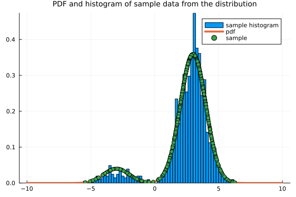
Visualizing the score function.
plot(title="The score function and the sample", titlefont=10)
plot!(x', target_score', label="score function", markersize=2)
scatter!(sample_points', s -> gradlogpdf(target_prob, s), label="data", markersize=2)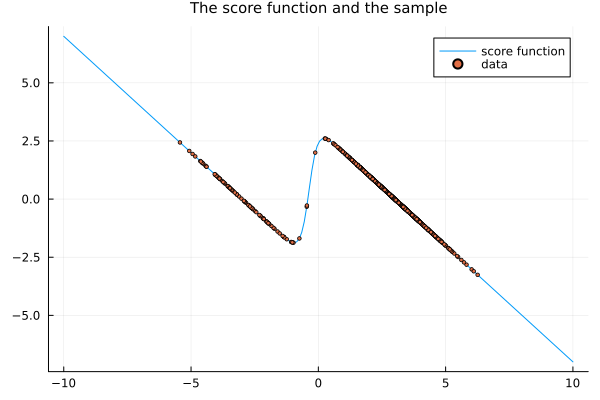
The neural network model
The neural network we consider is a simple feed-forward neural network made of a single hidden layer, obtained as a chain of a couple of dense layers. This is implemented with the LuxDL/Lux.jl package.
We will see, again, that we don't need a big neural network in this simple example. We go as low as it works.
model = Chain(Dense(1 => 8, relu), Dense(8 => 1))Chain(
layer_1 = Dense(1 => 8, relu), # 16 parameters
layer_2 = Dense(8 => 1), # 9 parameters
) # Total: 25 parameters,
# plus 0 states.The LuxDL/Lux.jl package uses explicit parameters, that are initialized (or obtained) with the Lux.setup function, giving us the parameters and the state of the model.
ps, st = Lux.setup(rng, model) # initialize and get the parameters and states of the model((layer_1 = (weight = Float32[0.13494724; -0.77743006; … ; 0.458204; 0.29388127;;], bias = Float32[0.0; 0.0; … ; 0.0; 0.0;;]), layer_2 = (weight = Float32[0.7271103 -0.07848769 … 0.1581796 -0.26711413], bias = Float32[0.0;;])), (layer_1 = NamedTuple(), layer_2 = NamedTuple()))Explicit score matching loss function $J_{\mathrm{ESM}}({\boldsymbol{\theta}})$
For educational purposes, since we have the pdf and the score function, one of the ways we may train the model is directly with $J_{\mathrm{ESM}}({\boldsymbol{\theta}})$. This is also useful to make sure that our network is able to model the desired score function.
Here is how we implement it.
function loss_function_esm(model, ps, st, data)
x, y, target_pdf, sample_points = data
y_pred, st = Lux.apply(model, x, ps, st)
loss = mean(target_pdf .* (y_pred .- y) .^2)
return loss, st, ()
endloss_function_esm (generic function with 1 method)Plain square error loss function
Still for educational purposes, we modify $J_{\mathrm{ESM}}({\boldsymbol{\theta}})$ for training, without weighting on the distribution of the random variable itself, as in $J_{\mathrm{ESM}}({\boldsymbol{\theta}})$. This has the benefit of giving more weight to the transition region. Here is how we implement it.
function loss_function_esm_plain(model, ps, st, data)
x, y, target_pdf, sample_points = data
y_pred, st = Lux.apply(model, x, ps, st)
loss = mean(abs2, y_pred .- y)
return loss, st, ()
endloss_function_esm_plain (generic function with 1 method)Finite-difference score matching ${\tilde J}_{\mathrm{FDSM}}$
Again, for educational purposes, we may implement ${\tilde J}_{\mathrm{FDSM}}({\boldsymbol{\theta}})$, as follows.
function loss_function_FDSM(model, ps, st, data)
x, y, target_pdf, sample_points = data
xmin, xmax = extrema(x)
delta = (xmax - xmin) / 2length(x)
y_pred_fwd, = Lux.apply(model, x .+ delta, ps, st)
y_pred_bwd, = Lux.apply(model, x .- delta, ps, st)
y_pred = ( y_pred_bwd .+ y_pred_fwd ) ./ 2
dy_pred = (y_pred_fwd .- y_pred_bwd ) ./ 2delta
loss = mean(target_pdf .* (dy_pred + y_pred .^ 2 / 2))
return loss, st, ()
endloss_function_FDSM (generic function with 1 method)Empirical finite-difference score matching loss function ${\tilde J}_{\mathrm{FDSM}{\tilde p}_0}$
In practice we would use the sample data, not the supposedly unknown score function and PDF themselves. Here would be one implementation using finite differences, along with Monte-Carlo.
function loss_function_FDSM_over_sample(model, ps, st, data)
x, y, target_pdf, sample_points = data
xmin, xmax = extrema(sample_points)
delta = (xmax - xmin) / 2length(sample_points)
y_pred_fwd, = Lux.apply(model, sample_points .+ delta, ps, st)
y_pred_bwd, = Lux.apply(model, sample_points .- delta, ps, st)
y_pred = ( y_pred_bwd .+ y_pred_fwd ) ./ 2
dy_pred = (y_pred_fwd .- y_pred_bwd ) ./ 2delta
loss = mean(dy_pred + y_pred .^ 2 / 2)
return loss, st, ()
endloss_function_FDSM_over_sample (generic function with 1 method)Optimization setup
Optimization method
We use the classical Adam optimiser (see Kingma and Ba (2015)), which is a stochastic gradient-based optimization method.
opt = Adam(0.03)
tstate_org = Lux.Training.TrainState(rng, model, opt)Lux.Experimental.TrainState{Lux.Chain{@NamedTuple{layer_1::Lux.Dense{true, typeof(NNlib.relu), typeof(WeightInitializers.glorot_uniform), typeof(WeightInitializers.zeros32)}, layer_2::Lux.Dense{true, typeof(identity), typeof(WeightInitializers.glorot_uniform), typeof(WeightInitializers.zeros32)}}, Nothing}, @NamedTuple{layer_1::@NamedTuple{weight::Matrix{Float32}, bias::Matrix{Float32}}, layer_2::@NamedTuple{weight::Matrix{Float32}, bias::Matrix{Float32}}}, @NamedTuple{layer_1::@NamedTuple{}, layer_2::@NamedTuple{}}, @NamedTuple{layer_1::@NamedTuple{weight::Optimisers.Leaf{Optimisers.Adam, Tuple{Matrix{Float32}, Matrix{Float32}, Tuple{Float32, Float32}}}, bias::Optimisers.Leaf{Optimisers.Adam, Tuple{Matrix{Float32}, Matrix{Float32}, Tuple{Float32, Float32}}}}, layer_2::@NamedTuple{weight::Optimisers.Leaf{Optimisers.Adam, Tuple{Matrix{Float32}, Matrix{Float32}, Tuple{Float32, Float32}}}, bias::Optimisers.Leaf{Optimisers.Adam, Tuple{Matrix{Float32}, Matrix{Float32}, Tuple{Float32, Float32}}}}}}(Chain(), (layer_1 = (weight = Float32[0.70294106; 0.25593728; … ; 0.05214775; 0.30236235;;], bias = Float32[0.0; 0.0; … ; 0.0; 0.0;;]), layer_2 = (weight = Float32[0.44859958 -0.7899004 … 0.5270747 -0.12112883], bias = Float32[0.0;;])), (layer_1 = NamedTuple(), layer_2 = NamedTuple()), (layer_1 = (weight = Leaf(Adam(0.03, (0.9, 0.999), 1.0e-8), (Float32[0.0; 0.0; … ; 0.0; 0.0;;], Float32[0.0; 0.0; … ; 0.0; 0.0;;], (0.9, 0.999))), bias = Leaf(Adam(0.03, (0.9, 0.999), 1.0e-8), (Float32[0.0; 0.0; … ; 0.0; 0.0;;], Float32[0.0; 0.0; … ; 0.0; 0.0;;], (0.9, 0.999)))), layer_2 = (weight = Leaf(Adam(0.03, (0.9, 0.999), 1.0e-8), (Float32[0.0 0.0 … 0.0 0.0], Float32[0.0 0.0 … 0.0 0.0], (0.9, 0.999))), bias = Leaf(Adam(0.03, (0.9, 0.999), 1.0e-8), (Float32[0.0;;], Float32[0.0;;], (0.9, 0.999))))), 0)Automatic differentiation in the optimization
As mentioned, we setup differentiation in LuxDL/Lux.jl with the FluxML/Zygote.jl library, which is currently the only one implemented (there are pre-defined methods for AutoForwardDiff(), AutoReverseDiff(), AutoFiniteDifferences(), etc., but not implemented yet).
vjp_rule = Lux.Training.AutoZygote()ADTypes.AutoZygote()Processor
We use the CPU instead of the GPU.
dev_cpu = cpu_device()
## dev_gpu = gpu_device()(::LuxDeviceUtils.LuxCPUDevice) (generic function with 5 methods)Check differentiation
Check if Zygote via Lux is working fine to differentiate the loss functions for training.
Lux.Training.compute_gradients(vjp_rule, loss_function_esm, data, tstate_org)((layer_1 = (weight = Float32[0.081916; -0.14423883; … ; 0.09624585; -0.022118587;;], bias = Float32[0.012736854; -0.022427231; … ; 0.014964958; -0.0034391477;;]), layer_2 = (weight = Float32[0.12835972 0.046735123 … 0.009522378 0.05521252], bias = Float32[0.0116279265;;])), 0.08318356085585471, (), Lux.Experimental.TrainState{Lux.Chain{@NamedTuple{layer_1::Lux.Dense{true, typeof(NNlib.relu), typeof(WeightInitializers.glorot_uniform), typeof(WeightInitializers.zeros32)}, layer_2::Lux.Dense{true, typeof(identity), typeof(WeightInitializers.glorot_uniform), typeof(WeightInitializers.zeros32)}}, Nothing}, @NamedTuple{layer_1::@NamedTuple{weight::Matrix{Float32}, bias::Matrix{Float32}}, layer_2::@NamedTuple{weight::Matrix{Float32}, bias::Matrix{Float32}}}, @NamedTuple{layer_1::@NamedTuple{}, layer_2::@NamedTuple{}}, @NamedTuple{layer_1::@NamedTuple{weight::Optimisers.Leaf{Optimisers.Adam, Tuple{Matrix{Float32}, Matrix{Float32}, Tuple{Float32, Float32}}}, bias::Optimisers.Leaf{Optimisers.Adam, Tuple{Matrix{Float32}, Matrix{Float32}, Tuple{Float32, Float32}}}}, layer_2::@NamedTuple{weight::Optimisers.Leaf{Optimisers.Adam, Tuple{Matrix{Float32}, Matrix{Float32}, Tuple{Float32, Float32}}}, bias::Optimisers.Leaf{Optimisers.Adam, Tuple{Matrix{Float32}, Matrix{Float32}, Tuple{Float32, Float32}}}}}}(Chain(), (layer_1 = (weight = Float32[0.70294106; 0.25593728; … ; 0.05214775; 0.30236235;;], bias = Float32[0.0; 0.0; … ; 0.0; 0.0;;]), layer_2 = (weight = Float32[0.44859958 -0.7899004 … 0.5270747 -0.12112883], bias = Float32[0.0;;])), (layer_1 = NamedTuple(), layer_2 = NamedTuple()), (layer_1 = (weight = Leaf(Adam(0.03, (0.9, 0.999), 1.0e-8), (Float32[0.0; 0.0; … ; 0.0; 0.0;;], Float32[0.0; 0.0; … ; 0.0; 0.0;;], (0.9, 0.999))), bias = Leaf(Adam(0.03, (0.9, 0.999), 1.0e-8), (Float32[0.0; 0.0; … ; 0.0; 0.0;;], Float32[0.0; 0.0; … ; 0.0; 0.0;;], (0.9, 0.999)))), layer_2 = (weight = Leaf(Adam(0.03, (0.9, 0.999), 1.0e-8), (Float32[0.0 0.0 … 0.0 0.0], Float32[0.0 0.0 … 0.0 0.0], (0.9, 0.999))), bias = Leaf(Adam(0.03, (0.9, 0.999), 1.0e-8), (Float32[0.0;;], Float32[0.0;;], (0.9, 0.999))))), 0))Lux.Training.compute_gradients(vjp_rule, loss_function_esm_plain, data, tstate_org)((layer_1 = (weight = Float32[9.912916; -17.454802; … ; 11.6470175; -2.6766407;;], bias = Float32[1.1476358; -2.0207732; … ; 1.3483958; -0.30987942;;]), layer_2 = (weight = Float32[15.533219 5.6555667 … 1.1523334 6.681443], bias = Float32[-2.4405797;;])), 29.617115318345245, (), Lux.Experimental.TrainState{Lux.Chain{@NamedTuple{layer_1::Lux.Dense{true, typeof(NNlib.relu), typeof(WeightInitializers.glorot_uniform), typeof(WeightInitializers.zeros32)}, layer_2::Lux.Dense{true, typeof(identity), typeof(WeightInitializers.glorot_uniform), typeof(WeightInitializers.zeros32)}}, Nothing}, @NamedTuple{layer_1::@NamedTuple{weight::Matrix{Float32}, bias::Matrix{Float32}}, layer_2::@NamedTuple{weight::Matrix{Float32}, bias::Matrix{Float32}}}, @NamedTuple{layer_1::@NamedTuple{}, layer_2::@NamedTuple{}}, @NamedTuple{layer_1::@NamedTuple{weight::Optimisers.Leaf{Optimisers.Adam, Tuple{Matrix{Float32}, Matrix{Float32}, Tuple{Float32, Float32}}}, bias::Optimisers.Leaf{Optimisers.Adam, Tuple{Matrix{Float32}, Matrix{Float32}, Tuple{Float32, Float32}}}}, layer_2::@NamedTuple{weight::Optimisers.Leaf{Optimisers.Adam, Tuple{Matrix{Float32}, Matrix{Float32}, Tuple{Float32, Float32}}}, bias::Optimisers.Leaf{Optimisers.Adam, Tuple{Matrix{Float32}, Matrix{Float32}, Tuple{Float32, Float32}}}}}}(Chain(), (layer_1 = (weight = Float32[0.70294106; 0.25593728; … ; 0.05214775; 0.30236235;;], bias = Float32[0.0; 0.0; … ; 0.0; 0.0;;]), layer_2 = (weight = Float32[0.44859958 -0.7899004 … 0.5270747 -0.12112883], bias = Float32[0.0;;])), (layer_1 = NamedTuple(), layer_2 = NamedTuple()), (layer_1 = (weight = Leaf(Adam(0.03, (0.9, 0.999), 1.0e-8), (Float32[0.0; 0.0; … ; 0.0; 0.0;;], Float32[0.0; 0.0; … ; 0.0; 0.0;;], (0.9, 0.999))), bias = Leaf(Adam(0.03, (0.9, 0.999), 1.0e-8), (Float32[0.0; 0.0; … ; 0.0; 0.0;;], Float32[0.0; 0.0; … ; 0.0; 0.0;;], (0.9, 0.999)))), layer_2 = (weight = Leaf(Adam(0.03, (0.9, 0.999), 1.0e-8), (Float32[0.0 0.0 … 0.0 0.0], Float32[0.0 0.0 … 0.0 0.0], (0.9, 0.999))), bias = Leaf(Adam(0.03, (0.9, 0.999), 1.0e-8), (Float32[0.0;;], Float32[0.0;;], (0.9, 0.999))))), 0))Lux.Training.compute_gradients(vjp_rule, loss_function_FDSM, data, tstate_org)((layer_1 = (weight = Float32[0.040958226; -0.07211983; … ; 0.04812312; -0.011059344;;], bias = Float32[0.0062698424; -0.011040062; … ; 0.0073666573; -0.0016929582;;]), layer_2 = (weight = Float32[0.064180195 0.023367703 … 0.0047612116 0.027606398], bias = Float32[0.0058139563;;])), 0.017244607734971565, (), Lux.Experimental.TrainState{Lux.Chain{@NamedTuple{layer_1::Lux.Dense{true, typeof(NNlib.relu), typeof(WeightInitializers.glorot_uniform), typeof(WeightInitializers.zeros32)}, layer_2::Lux.Dense{true, typeof(identity), typeof(WeightInitializers.glorot_uniform), typeof(WeightInitializers.zeros32)}}, Nothing}, @NamedTuple{layer_1::@NamedTuple{weight::Matrix{Float32}, bias::Matrix{Float32}}, layer_2::@NamedTuple{weight::Matrix{Float32}, bias::Matrix{Float32}}}, @NamedTuple{layer_1::@NamedTuple{}, layer_2::@NamedTuple{}}, @NamedTuple{layer_1::@NamedTuple{weight::Optimisers.Leaf{Optimisers.Adam, Tuple{Matrix{Float32}, Matrix{Float32}, Tuple{Float32, Float32}}}, bias::Optimisers.Leaf{Optimisers.Adam, Tuple{Matrix{Float32}, Matrix{Float32}, Tuple{Float32, Float32}}}}, layer_2::@NamedTuple{weight::Optimisers.Leaf{Optimisers.Adam, Tuple{Matrix{Float32}, Matrix{Float32}, Tuple{Float32, Float32}}}, bias::Optimisers.Leaf{Optimisers.Adam, Tuple{Matrix{Float32}, Matrix{Float32}, Tuple{Float32, Float32}}}}}}(Chain(), (layer_1 = (weight = Float32[0.70294106; 0.25593728; … ; 0.05214775; 0.30236235;;], bias = Float32[0.0; 0.0; … ; 0.0; 0.0;;]), layer_2 = (weight = Float32[0.44859958 -0.7899004 … 0.5270747 -0.12112883], bias = Float32[0.0;;])), (layer_1 = NamedTuple(), layer_2 = NamedTuple()), (layer_1 = (weight = Leaf(Adam(0.03, (0.9, 0.999), 1.0e-8), (Float32[0.0; 0.0; … ; 0.0; 0.0;;], Float32[0.0; 0.0; … ; 0.0; 0.0;;], (0.9, 0.999))), bias = Leaf(Adam(0.03, (0.9, 0.999), 1.0e-8), (Float32[0.0; 0.0; … ; 0.0; 0.0;;], Float32[0.0; 0.0; … ; 0.0; 0.0;;], (0.9, 0.999)))), layer_2 = (weight = Leaf(Adam(0.03, (0.9, 0.999), 1.0e-8), (Float32[0.0 0.0 … 0.0 0.0], Float32[0.0 0.0 … 0.0 0.0], (0.9, 0.999))), bias = Leaf(Adam(0.03, (0.9, 0.999), 1.0e-8), (Float32[0.0;;], Float32[0.0;;], (0.9, 0.999))))), 0))Lux.Training.compute_gradients(vjp_rule, loss_function_FDSM_over_sample, data, tstate_org)((layer_1 = (weight = Float32[0.8230896; -1.4493103; … ; 0.96707153; -0.22224617;;], bias = Float32[0.12613297; -0.2220993; … ; 0.14819717; -0.034057617;;]), layer_2 = (weight = Float32[1.2897491 0.46958923 … 0.09568024 0.5547714], bias = Float32[0.13446045;;])), 0.3277770365161274, (), Lux.Experimental.TrainState{Lux.Chain{@NamedTuple{layer_1::Lux.Dense{true, typeof(NNlib.relu), typeof(WeightInitializers.glorot_uniform), typeof(WeightInitializers.zeros32)}, layer_2::Lux.Dense{true, typeof(identity), typeof(WeightInitializers.glorot_uniform), typeof(WeightInitializers.zeros32)}}, Nothing}, @NamedTuple{layer_1::@NamedTuple{weight::Matrix{Float32}, bias::Matrix{Float32}}, layer_2::@NamedTuple{weight::Matrix{Float32}, bias::Matrix{Float32}}}, @NamedTuple{layer_1::@NamedTuple{}, layer_2::@NamedTuple{}}, @NamedTuple{layer_1::@NamedTuple{weight::Optimisers.Leaf{Optimisers.Adam, Tuple{Matrix{Float32}, Matrix{Float32}, Tuple{Float32, Float32}}}, bias::Optimisers.Leaf{Optimisers.Adam, Tuple{Matrix{Float32}, Matrix{Float32}, Tuple{Float32, Float32}}}}, layer_2::@NamedTuple{weight::Optimisers.Leaf{Optimisers.Adam, Tuple{Matrix{Float32}, Matrix{Float32}, Tuple{Float32, Float32}}}, bias::Optimisers.Leaf{Optimisers.Adam, Tuple{Matrix{Float32}, Matrix{Float32}, Tuple{Float32, Float32}}}}}}(Chain(), (layer_1 = (weight = Float32[0.70294106; 0.25593728; … ; 0.05214775; 0.30236235;;], bias = Float32[0.0; 0.0; … ; 0.0; 0.0;;]), layer_2 = (weight = Float32[0.44859958 -0.7899004 … 0.5270747 -0.12112883], bias = Float32[0.0;;])), (layer_1 = NamedTuple(), layer_2 = NamedTuple()), (layer_1 = (weight = Leaf(Adam(0.03, (0.9, 0.999), 1.0e-8), (Float32[0.0; 0.0; … ; 0.0; 0.0;;], Float32[0.0; 0.0; … ; 0.0; 0.0;;], (0.9, 0.999))), bias = Leaf(Adam(0.03, (0.9, 0.999), 1.0e-8), (Float32[0.0; 0.0; … ; 0.0; 0.0;;], Float32[0.0; 0.0; … ; 0.0; 0.0;;], (0.9, 0.999)))), layer_2 = (weight = Leaf(Adam(0.03, (0.9, 0.999), 1.0e-8), (Float32[0.0 0.0 … 0.0 0.0], Float32[0.0 0.0 … 0.0 0.0], (0.9, 0.999))), bias = Leaf(Adam(0.03, (0.9, 0.999), 1.0e-8), (Float32[0.0;;], Float32[0.0;;], (0.9, 0.999))))), 0))Training loop
Here is the typical main training loop suggest in the LuxDL/Lux.jl tutorials, but sligthly modified to save the history of losses per iteration.
function train(tstate::Lux.Experimental.TrainState, vjp, data, loss_function, epochs, numshowepochs=20, numsavestates=0)
losses = zeros(epochs)
tstates = [(0, tstate)]
for epoch in 1:epochs
grads, loss, stats, tstate = Lux.Training.compute_gradients(vjp,
loss_function, data, tstate)
if ( epochs ≥ numshowepochs > 0 ) && rem(epoch, div(epochs, numshowepochs)) == 0
println("Epoch: $(epoch) || Loss: $(loss)")
end
if ( epochs ≥ numsavestates > 0 ) && rem(epoch, div(epochs, numsavestates)) == 0
push!(tstates, (epoch, tstate))
end
losses[epoch] = loss
tstate = Lux.Training.apply_gradients(tstate, grads)
end
return tstate, losses, tstates
endtrain (generic function with 3 methods)Training
Training with $J_{\mathrm{ESM}}({\boldsymbol{\theta}})$
Now we attempt to train the model, starting with $J_{\mathrm{ESM}}({\boldsymbol{\theta}})$.
@time tstate, losses, tstates = train(tstate_org, vjp_rule, data, loss_function_esm, 500, 20, 125)Epoch: 25 || Loss: 0.02223710965025483
Epoch: 50 || Loss: 0.006691697389841013
Epoch: 75 || Loss: 0.004501405878595178
Epoch: 100 || Loss: 0.0024191247433767516
Epoch: 125 || Loss: 0.0013209774348190866
Epoch: 150 || Loss: 0.0008850966738065397
Epoch: 175 || Loss: 0.0006542476357667317
Epoch: 200 || Loss: 0.00051201713062538
Epoch: 225 || Loss: 0.00041313458171680825
Epoch: 250 || Loss: 0.0003422627716625342
Epoch: 275 || Loss: 0.00028627855645764846
Epoch: 300 || Loss: 0.00024477812802777883
Epoch: 325 || Loss: 0.00021085213972774265
Epoch: 350 || Loss: 0.00018255019669484438
Epoch: 375 || Loss: 0.00015867296216720198
Epoch: 400 || Loss: 0.00014010344760749443
Epoch: 425 || Loss: 0.0001246763656481023
Epoch: 450 || Loss: 0.0001111218627213915
Epoch: 475 || Loss: 9.905671714028212e-5
Epoch: 500 || Loss: 0.000386263387497906
1.219110 seconds (2.31 M allocations: 199.002 MiB, 4.11% gc time, 95.67% compilation time)Testing out the trained model.
y_pred = Lux.apply(tstate.model, dev_cpu(x), tstate.parameters, tstate.states)[1]1×200 Matrix{Float64}:
6.97838 6.8782 6.77802 6.67783 6.57765 … -6.82543 -6.92618 -7.02694Visualizing the result.
plot(title="Fitting", titlefont=10)
plot!(x', y', linewidth=4, label="score function")
scatter!(sample_points', s -> gradlogpdf(target_prob, s), label="data", markersize=2)
plot!(x', y_pred', linewidth=2, label="predicted MLP")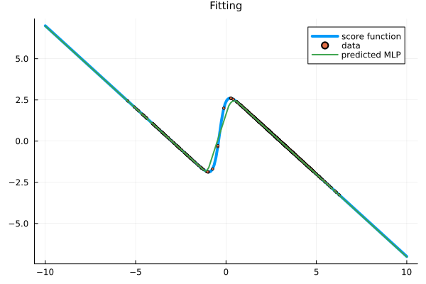
Just for the fun of it, let us see an animation of the optimization process.
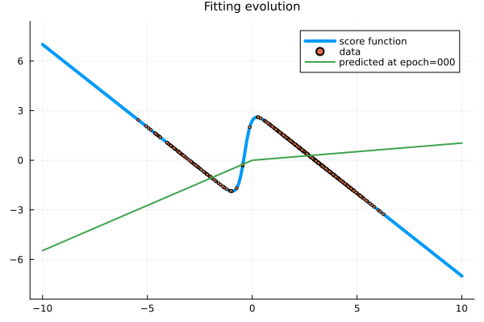
We also visualize the evolution of the losses.
plot(losses, title="Evolution of the loss", titlefont=10, xlabel="iteration", ylabel="error", legend=false)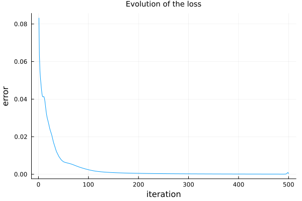
Recovering the PDF of the distribution from the trained score function.
paux = exp.(accumulate(+, y_pred) .* dx)
pdf_pred = paux ./ sum(paux) ./ dx
plot(title="Original PDF and PDF from predicted score function", titlefont=10)
plot!(x', target_pdf', label="original")
plot!(x', pdf_pred', label="recoverd")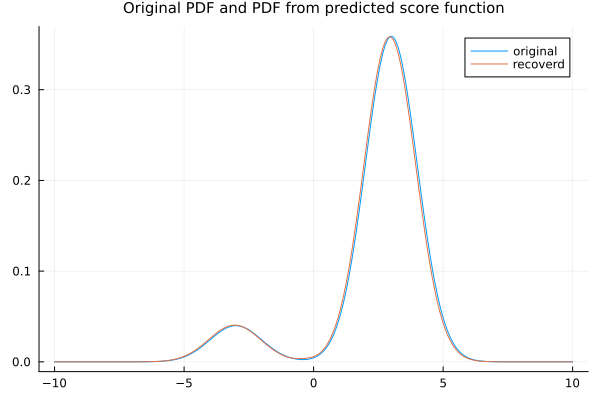
Training with plain square error loss
Now we attempt to train it with the plain square error loss function. We do not reuse the state from the previous optimization. We start over at the initial state, for the sake of comparison of the different loss functions.
@time tstate, losses, = train(tstate_org, vjp_rule, data, loss_function_esm_plain, 500)Epoch: 25 || Loss: 2.055124800649616
Epoch: 50 || Loss: 1.5583765718899456
Epoch: 75 || Loss: 1.0770622637532312
Epoch: 100 || Loss: 0.7808281273173399
Epoch: 125 || Loss: 0.5953518235365906
Epoch: 150 || Loss: 0.4821181170015834
Epoch: 175 || Loss: 0.40977035051917554
Epoch: 200 || Loss: 0.35651602601918525
Epoch: 225 || Loss: 0.311816311194332
Epoch: 250 || Loss: 0.2722992584140177
Epoch: 275 || Loss: 0.23741996909240828
Epoch: 300 || Loss: 0.20691949986188987
Epoch: 325 || Loss: 0.1804186979322786
Epoch: 350 || Loss: 0.15759149142572038
Epoch: 375 || Loss: 0.13795286510663743
Epoch: 400 || Loss: 0.12114862305788733
Epoch: 425 || Loss: 0.1065884225942152
Epoch: 450 || Loss: 0.09409958394353728
Epoch: 475 || Loss: 0.08345449897110671
Epoch: 500 || Loss: 0.07401898294652304
0.043388 seconds (166.51 k allocations: 50.214 MiB, 36.80% gc time, 6.95% compilation time)Testing out the trained model.
y_pred = Lux.apply(tstate.model, dev_cpu(x), tstate.parameters, tstate.states)[1]1×200 Matrix{Float64}:
7.0104 6.90945 6.8085 6.70754 6.60659 … -6.80367 -6.90448 -7.00528Visualizing the result.
plot(title="Fitting", titlefont=10)
plot!(x', y', linewidth=4, label="score function")
scatter!(sample_points', s -> gradlogpdf(target_prob, s), label="data", markersize=2)
plot!(x', y_pred', linewidth=2, label="predicted MLP")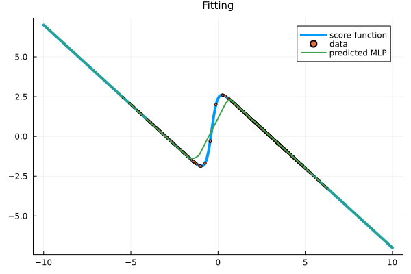
And evolution of the losses.
plot(losses, title="Evolution of the loss", titlefont=10, xlabel="iteration", ylabel="error", legend=false)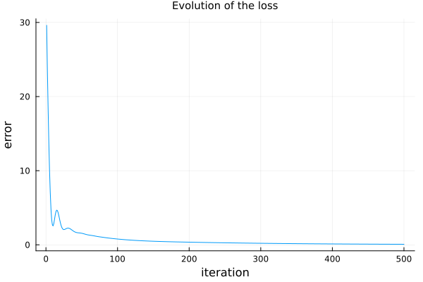
Recovering the PDF of the distribution from the trained score function.
paux = exp.(accumulate(+, y_pred) * dx)
pdf_pred = paux ./ sum(paux) ./ dx
plot(title="Original PDF and PDF from predicted score function", titlefont=10)
plot!(x', target_pdf', label="original")
plot!(x', pdf_pred', label="recoverd")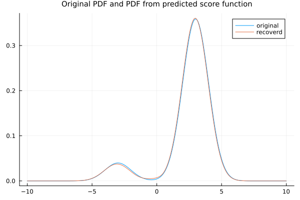
That is an almost perfect matching.
Training with ${\tilde J}_{\mathrm{FDSM}}({\boldsymbol{\theta}})$
Now we attempt to train it with ${\tilde J}_{\mathrm{FDSM}}$. Again we start over with the untrained state of the model.
@time tstate, losses, = train(tstate_org, vjp_rule, data, loss_function_FDSM, 500)Epoch: 25 || Loss: -0.013250446306446602
Epoch: 50 || Loss: -0.021021238218009955
Epoch: 75 || Loss: -0.022121680985866986
Epoch: 100 || Loss: -0.023155982962771063
Epoch: 125 || Loss: -0.0237014734903597
Epoch: 150 || Loss: -0.023917536473029088
Epoch: 175 || Loss: -0.02402959790314438
Epoch: 200 || Loss: -0.024097789989462676
Epoch: 225 || Loss: -0.02414796022891866
Epoch: 250 || Loss: -0.02418232605296512
Epoch: 275 || Loss: -0.024204024658397216
Epoch: 300 || Loss: -0.024225034678784785
Epoch: 325 || Loss: -0.02424386150160508
Epoch: 350 || Loss: -0.024257394328716125
Epoch: 375 || Loss: -0.02426949065370041
Epoch: 400 || Loss: -0.024280314128389678
Epoch: 425 || Loss: -0.024289684412206154
Epoch: 450 || Loss: -0.02429666896379011
Epoch: 475 || Loss: -0.02430175061672333
Epoch: 500 || Loss: -0.024275445932148133
0.061979 seconds (192.55 k allocations: 103.932 MiB, 24.07% gc time)We may try a little longer from this state on.
@time tstate, losses_more, = train(tstate, vjp_rule, data, loss_function_FDSM, 500)
append!(losses, losses_more)Epoch: 25 || Loss: -0.02430823760855422
Epoch: 50 || Loss: -0.02431173970583153
Epoch: 75 || Loss: -0.02431456538741065
Epoch: 100 || Loss: -0.024275230748504354
Epoch: 125 || Loss: -0.024320728495524597
Epoch: 150 || Loss: -0.024322724108584364
Epoch: 175 || Loss: -0.024261020975993138
Epoch: 200 || Loss: -0.024327078269369827
Epoch: 225 || Loss: -0.024329926545941894
Epoch: 250 || Loss: -0.02433264885401282
Epoch: 275 || Loss: -0.02432004601892687
Epoch: 300 || Loss: -0.024316589826942847
Epoch: 325 || Loss: -0.024335410468186245
Epoch: 350 || Loss: -0.024337789571064063
Epoch: 375 || Loss: -0.02433896338677334
Epoch: 400 || Loss: -0.024312364946613513
Epoch: 425 || Loss: -0.024334477898824515
Epoch: 450 || Loss: -0.024340674279174915
Epoch: 475 || Loss: -0.02434230696125561
Epoch: 500 || Loss: -0.02433476392295789
0.055265 seconds (193.03 k allocations: 103.940 MiB, 19.88% gc time)Testing out the trained model.
y_pred = Lux.apply(tstate.model, dev_cpu(x), tstate.parameters, tstate.states)[1]1×200 Matrix{Float64}:
7.241 7.1379 7.0348 6.9317 6.8286 … -6.75496 -6.85503 -6.95511Visualizing the result.
plot(title="Fitting", titlefont=10)
plot!(x', y', linewidth=4, label="score function")
scatter!(sample_points', s -> gradlogpdf(target_prob, s), label="data", markersize=2)
plot!(x', y_pred', linewidth=2, label="predicted MLP")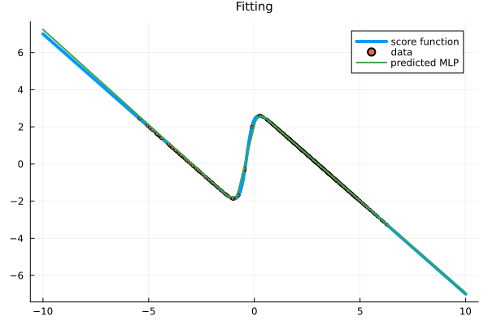
And evolution of the losses.
plot(losses, title="Evolution of the loss", titlefont=10, xlabel="iteration", ylabel="error", legend=false)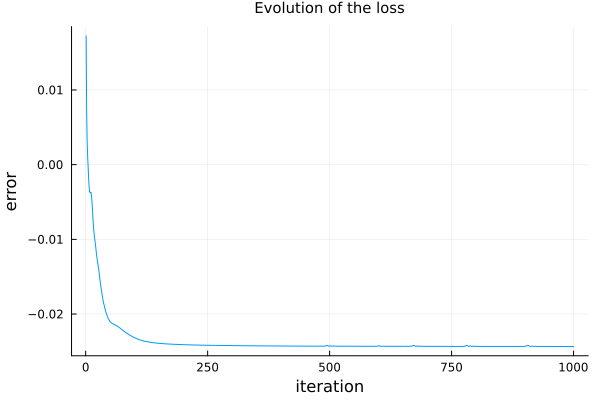
Recovering the PDF of the distribution from the trained score function.
paux = exp.(accumulate(+, y_pred) * dx)
pdf_pred = paux ./ sum(paux) ./ dx
plot(title="Original PDF and PDF from predicted score function", titlefont=10)
plot!(x', target_pdf', label="original")
plot!(x', pdf_pred', label="recoverd")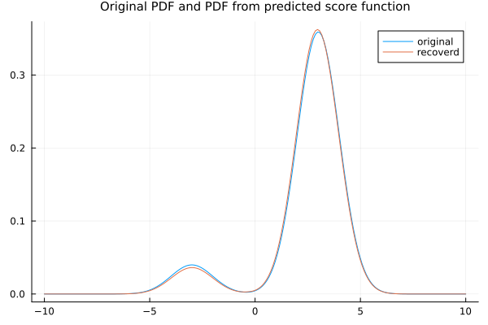
Training with ${\tilde J}_{\mathrm{FDSM}{\tilde p}_0}({\boldsymbol{\theta}})$
Finally we attemp to train with the sample data. This is the real thing, without anything from the supposedly unknown target distribution other than the sample data.
@time tstate, losses, tstates = train(tstate_org, vjp_rule, data, loss_function_FDSM_over_sample, 500, 20, 125)Epoch: 25 || Loss: -0.27507627873321633
Epoch: 50 || Loss: -0.4351261013008194
Epoch: 75 || Loss: -0.4546809121112698
Epoch: 100 || Loss: -0.46698966984829654
Epoch: 125 || Loss: -0.46996862105105347
Epoch: 150 || Loss: -0.4746128131314089
Epoch: 175 || Loss: -0.4771590743047411
Epoch: 200 || Loss: -0.47578122166245274
Epoch: 225 || Loss: -0.4793221090972054
Epoch: 250 || Loss: -0.4806097635768359
Epoch: 275 || Loss: -0.4794982708786946
Epoch: 300 || Loss: -0.47943628694111295
Epoch: 325 || Loss: -0.48045054478924887
Epoch: 350 || Loss: -0.4825369738079804
Epoch: 375 || Loss: -0.48301924260505763
Epoch: 400 || Loss: -0.4873653923770337
Epoch: 425 || Loss: -0.48666480194401907
Epoch: 450 || Loss: -0.4882282858178073
Epoch: 475 || Loss: -0.48841754406641347
Epoch: 500 || Loss: -0.4878499072479213
0.145936 seconds (196.16 k allocations: 433.056 MiB, 15.24% gc time)Testing out the trained model.
y_pred = Lux.apply(tstate.model, dev_cpu(x), tstate.parameters, tstate.states)[1]1×200 Matrix{Float64}:
5.34578 5.27068 5.19558 5.12048 5.04538 … -7.4357 -7.54538 -7.65506Visualizing the result.
plot(title="Fitting", titlefont=10)
plot!(x', y', linewidth=4, label="score function")
scatter!(sample_points', s -> gradlogpdf(target_prob, s), label="data", markersize=2)
plot!(x', y_pred', linewidth=2, label="predicted MLP")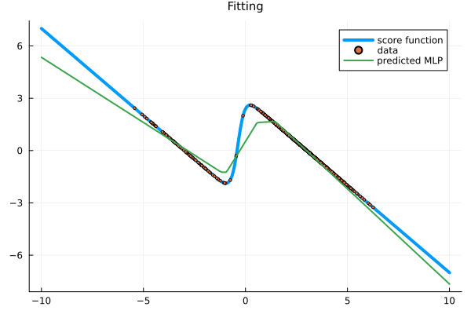
Let us see an animation of the optimization process in this case, as well, since it is the one of interest.
Here is the evolution of the losses.
plot(losses, title="Evolution of the loss", titlefont=10, xlabel="iteration", ylabel="error", legend=false)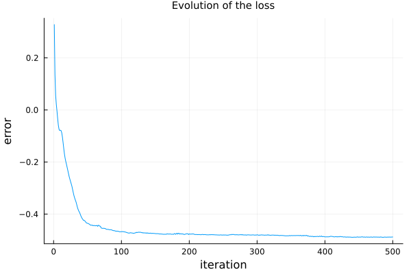
Recovering the PDF of the distribution from the trained score function.
paux = exp.(accumulate(+, y_pred) * dx)
pdf_pred = paux ./ sum(paux) ./ dx
plot(title="Original PDF and PDF from predicted score function", titlefont=10)
plot!(x', target_pdf', label="original")
plot!(x', pdf_pred', label="recoverd")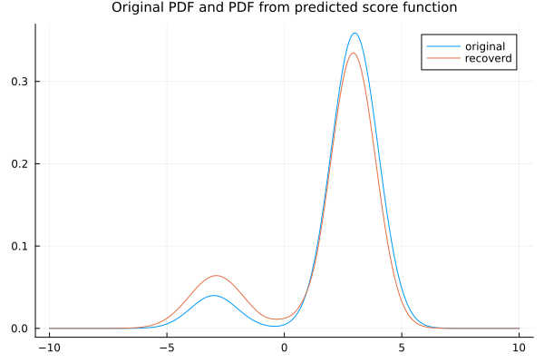
And the evolution of the PDF.
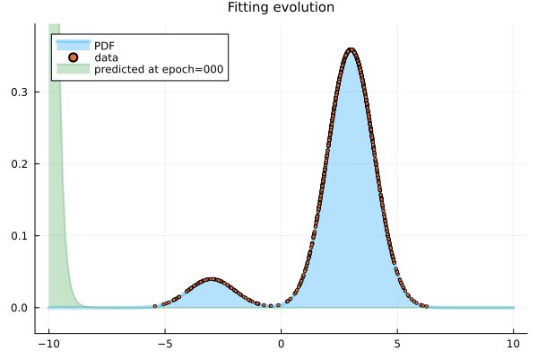
Pre-training ${\tilde J}_{\mathrm{FDSM}{\tilde p}_0}{\tilde J}_{\mathrm{FDSM}{\tilde p}_0}({\boldsymbol{\theta}})$ with $J_{\mathrm{ESM}}({\boldsymbol{\theta}})$
Let us now pre-train the model with the $J_{\mathrm{ESM}}({\boldsymbol{\theta}})$ and see if ${\tilde J}_{\mathrm{FDSM}{\tilde p}_0}({\boldsymbol{\theta}})$ improves.
tstate, = train(tstate_org, vjp_rule, data, loss_function_esm, 500)Epoch: 25 || Loss: 0.02223710965025483
Epoch: 50 || Loss: 0.006691697389841013
Epoch: 75 || Loss: 0.004501405878595178
Epoch: 100 || Loss: 0.0024191247433767516
Epoch: 125 || Loss: 0.0013209774348190866
Epoch: 150 || Loss: 0.0008850966738065397
Epoch: 175 || Loss: 0.0006542476357667317
Epoch: 200 || Loss: 0.00051201713062538
Epoch: 225 || Loss: 0.00041313458171680825
Epoch: 250 || Loss: 0.0003422627716625342
Epoch: 275 || Loss: 0.00028627855645764846
Epoch: 300 || Loss: 0.00024477812802777883
Epoch: 325 || Loss: 0.00021085213972774265
Epoch: 350 || Loss: 0.00018255019669484438
Epoch: 375 || Loss: 0.00015867296216720198
Epoch: 400 || Loss: 0.00014010344760749443
Epoch: 425 || Loss: 0.0001246763656481023
Epoch: 450 || Loss: 0.0001111218627213915
Epoch: 475 || Loss: 9.905671714028212e-5
Epoch: 500 || Loss: 0.000386263387497906tstate, losses, = train(tstate, vjp_rule, data, loss_function_FDSM_over_sample, 500)Epoch: 25 || Loss: -0.4639852742192384
Epoch: 50 || Loss: -0.4904924301613814
Epoch: 75 || Loss: -0.49384616651445035
Epoch: 100 || Loss: -0.49428408442268773
Epoch: 125 || Loss: -0.49426293815914657
Epoch: 150 || Loss: -0.4943057570082061
Epoch: 175 || Loss: -0.4938413090857966
Epoch: 200 || Loss: -0.49377145700403535
Epoch: 225 || Loss: -0.4938504880661196
Epoch: 250 || Loss: -0.4942967135481435
Epoch: 275 || Loss: -0.49449523769901693
Epoch: 300 || Loss: -0.4944305216566804
Epoch: 325 || Loss: -0.49441014990043725
Epoch: 350 || Loss: -0.4942372374406724
Epoch: 375 || Loss: -0.493801196078429
Epoch: 400 || Loss: -0.49395261126756573
Epoch: 425 || Loss: -0.4942718836009231
Epoch: 450 || Loss: -0.49460867438939043
Epoch: 475 || Loss: -0.49456624931164217
Epoch: 500 || Loss: -0.49367402082819994Testing out the trained model.
y_pred = Lux.apply(tstate.model, dev_cpu(x), tstate.parameters, tstate.states)[1]1×200 Matrix{Float64}:
5.97562 5.89236 5.8091 5.72583 5.64257 … -7.07526 -7.17961 -7.28395Visualizing the result.
plot(title="Fitting", titlefont=10)
plot!(x', y', linewidth=4, label="score function")
scatter!(sample_points', s -> gradlogpdf(target_prob, s), label="data", markersize=2)
plot!(x', y_pred', linewidth=2, label="predicted MLP")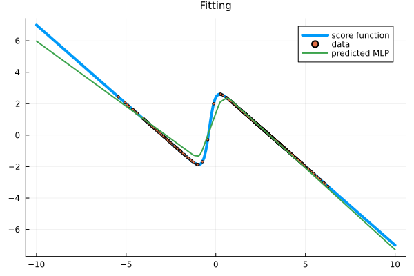
Recovering the PDF of the distribution from the trained score function.
paux = exp.(accumulate(+, y_pred) * dx)
pdf_pred = paux ./ sum(paux) ./ dx
plot(title="Original PDF and PDF from predicted score function", titlefont=10)
plot!(x', target_pdf', label="original")
plot!(x', pdf_pred', label="recoverd")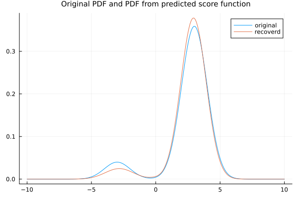
And evolution of the losses.
plot(losses, title="Evolution of the loss", titlefont=10, xlabel="iteration", ylabel="error", legend=false)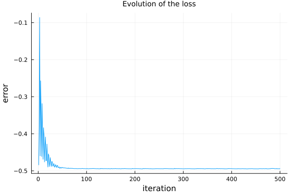
The need for enough sample points
One interesting thing is that enough sample points in the low-probability transition region is required for a proper fit, as the following example with few samples illustrates.
y = target_score # just to simplify the notation
sample_points = permutedims(rand(rng, target_prob, 128))
data = (x, y, target_pdf, sample_points)([-10.0 -9.899497487437186 … 9.899497487437186 10.0], [7.0 6.899497487437186 … -6.899497487437186 -7.0], [9.134720408364594e-13 1.8366893783972853e-12 … 1.6530204405575567e-11 8.221248367528135e-12], [2.364591713175648 1.6694699997401017 … 3.535373013331122 2.4619314409509387])tstate, losses, = train(tstate_org, vjp_rule, data, loss_function_FDSM_over_sample, 500)Epoch: 25 || Loss: -0.27007328689075105
Epoch: 50 || Loss: -0.42848896259212615
Epoch: 75 || Loss: -0.45263286341927256
Epoch: 100 || Loss: -0.4875138731891834
Epoch: 125 || Loss: -0.5258793366835268
Epoch: 150 || Loss: -0.5512503706499049
Epoch: 175 || Loss: -0.5611660580922053
Epoch: 200 || Loss: -0.5497094608726738
Epoch: 225 || Loss: -0.5645165018158177
Epoch: 250 || Loss: -0.5735151722899792
Epoch: 275 || Loss: -0.5762797159221338
Epoch: 300 || Loss: -0.5757225379693232
Epoch: 325 || Loss: -0.5728652115905511
Epoch: 350 || Loss: -0.5826830819555434
Epoch: 375 || Loss: -0.57549699562555
Epoch: 400 || Loss: -0.5812214640013326
Epoch: 425 || Loss: -0.5847046117704235
Epoch: 450 || Loss: -0.5858203231647577
Epoch: 475 || Loss: -0.5897994529751223
Epoch: 500 || Loss: -0.5923630797084634Testing out the trained model.
y_pred = Lux.apply(tstate.model, dev_cpu(x), tstate.parameters, tstate.states)[1]1×200 Matrix{Float64}:
30.922 30.4555 29.989 29.5225 29.056 … -7.71065 -7.82327 -7.93589Visualizing the result.
plot(title="Fitting", titlefont=10)
plot!(x', y', linewidth=4, label="score function")
scatter!(sample_points', s -> gradlogpdf(target_prob, s)', label="data", markersize=2)
plot!(x', y_pred', linewidth=2, label="predicted MLP")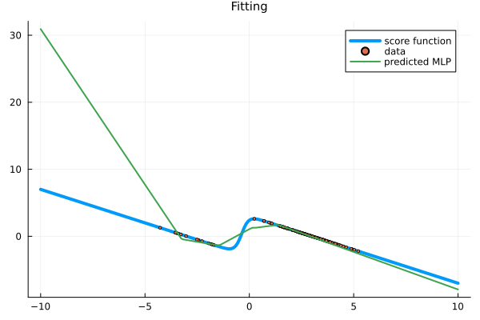
Recovering the PDF of the distribution from the trained score function.
paux = exp.(accumulate(+, y_pred) * dx)
pdf_pred = paux ./ sum(paux) ./ dx
plot(title="Original PDF and PDF from predicted score function", titlefont=10)
plot!(x', target_pdf', label="original")
plot!(x', pdf_pred', label="recoverd")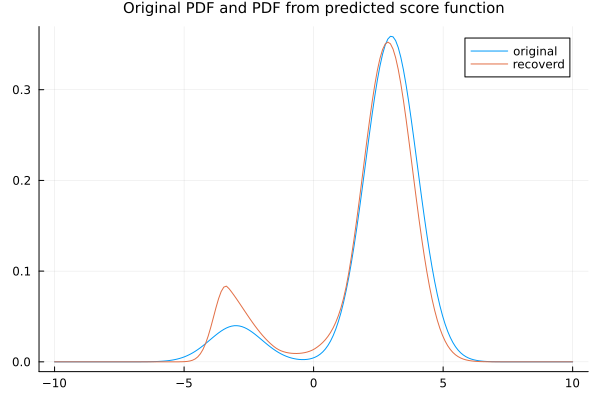
And evolution of the losses.
plot(losses, title="Evolution of the loss", titlefont=10, xlabel="iteration", ylabel="error", legend=false)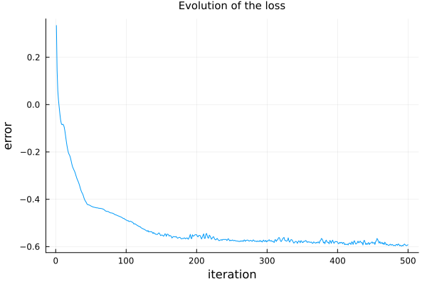
References
- Aapo Hyvärinen (2005), "Estimation of non-normalized statistical models by score matching", Journal of Machine Learning Research 6, 695-709
- T. Pang, K. Xu, C. Li, Y. Song, S. Ermon, J. Zhu (2020), Efficient Learning of Generative Models via Finite-Difference Score Matching, NeurIPS - see also the arxiv version
- Eric J. Ma, A Pedagogical Introduction to Score Models, webpage, April 21, 2021 - with the associated github repo
- D. P. Kingma, J. Ba (2015), Adam: A Method for Stochastic Optimization, In International Conference on Learning Representations (ICLR) – see also the arxiv version
- Y. Song and S. Ermon (2019), "Generative modeling by estimating gradients of the data distribution", NIPS'19: Proceedings of the 33rd International Conference on Neural Information Processing Systems, no. 1067, 11918-11930